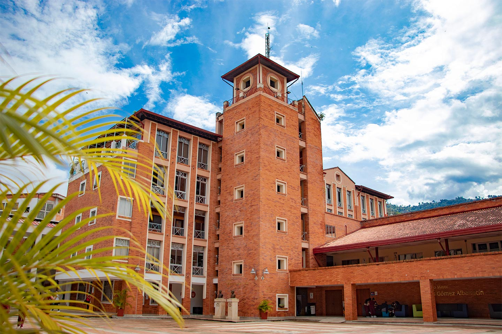
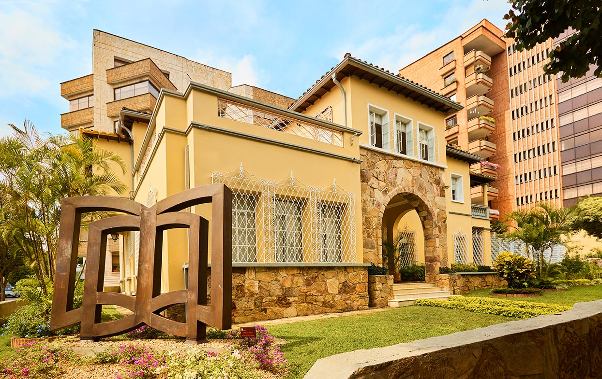

En la zona nororiental de la meseta de Bucaramanga en un lote de tres hectáreas, se encuentra un campus abierto que conjuga perfectamente la naturaleza y arborización del sector con los elementos arquitectónicos para generar espacios amables con la naturaleza, al tiempo corresponde a las necesidades académicas, administrativas y culturales actuales, un ejemplo de estética y equilibrio ecológico.
 Acá encontraras:
Facultad de ciencias económicas.
Facultad de ciencias jurídicas.
Facultad de ciencias sociales.
Facultad de estudios técnicos.
Facultad de ingeniería.
Relaciones nacionales e internacionales.
Localizado en el municipio de Floridablanca en inmediaciones de la urbanización El Bosque, se encuentra el campus destinado a la Facultad de Ciencias de la Salud; en una zona rodeada por importantes instituciones de salud, resaltando como la más importante el proyecto FOSUNAB.
Dentro del campus El Bosque se encuentra también el cuarto piso de la torre Milton Salazar de la FOSCAL, la cual cuenta con un área de 783,85 metros cuadrados de construcción distribuidos en un solo piso con tres aulas de clase, sala de lectura, cubículos de profesores estar médico, cubículos de coordinadores, recepción, salas de estudio y una batería de baños.
Acá encontraras:
Facultad de ciencias de la salud.
El campus Octavio Cadena Gómez, también conocido como Centro de Servicios Universitarios – CSU, se conecta a través de un sendero peatonal, entre naturaleza y cultura, con el Campus el Jardín, «La Ruta Cósmica», nombre que recibe el sendero permite que en cinco minutos se comuniquen los dos campus, y se experimente a través de esculturas y espacios abiertos una sensibilización entre la importancia de la ecología y el quehacer humano. Este sendero remata en El Reloj Solar, espacio abierto a manera de media torta rodeado de naturaleza que permite la generación de encuentros culturales y expresiones artísticas, convirtiéndolo con el paso de los años en un hito dentro de la comunidad, ya que lleva el nombre del reconocimiento que se le otorga cada año a los mejores docentes de la institución.
Manteniendo el principio arquitectónico de implantación según las características propias del terreno, el CSU se crea como la solución a la necesidad de concentrar y ofrecer en un solo espacio servicios universitarios y de bienestar, para incentivar la práctica del deporte y el desarrollo de expresiones artísticas y culturales.
Acá encontrarás:
Bienestar universitario
Departamento de lenguas
El campus Rafael Ardila Duarte fue concebido como residencia habitacional por 45 años, durante esta época no sufrió transformaciones severas ya que su uso original de vivienda no fue alterado sino hasta 1990, cuando se emprendió la adecuación para uso institucional.
El edificio contiguo a este campus alberga los estudiantes de programas de posgrados de la Facultad de Ciencias Económicas, Administrativas y Contables; además del programa de pregrado de Administración de Empresas DUAL de la misma facultad.
Acá encontraras:
UNAB dual